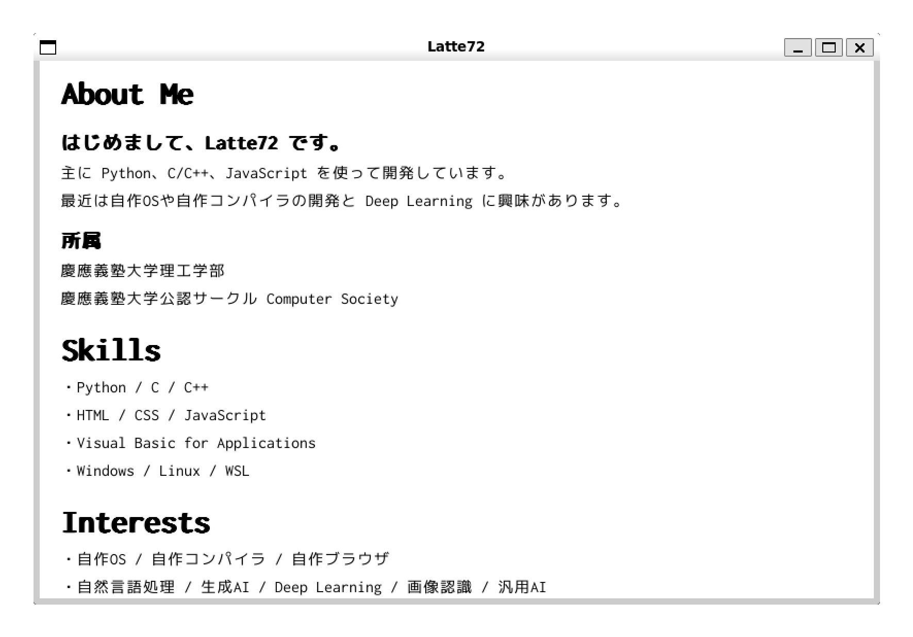

Latte's Simple Browser とは？
Latte's Simple Browser ( LSB ) は、独自に開発されたシンプルで軽量なブラウザです。
このプロジェクトは、ブラウザの基本機能を学びながら実装することを目的として設計されています。
使用方法
このプログラムの実行には GCC と SDL2 が必要です。
SDL2 のインストール
Ubuntu で SDL2 をインストールするには、以下のコマンドを実行してください。
sudo apt install libsdl2-dev libsdl2-ttf-dev
その他の環境での SDL2 のインストールに関しては、 SDL Wiki をご覧ください。
プログラムの実行
以下のコマンドを実行して、ソースコードをダウンロードし、コンパイルしてください。
git clone https://github.com/Latte72R/LSB.git cd ./LSB gcc ./main.c ./parser.c -o lsb -lSDL2 -lSDL2_ttf ./lsb ./test.html
ビルド済みバイナリ
Windows 用のビルド済みバイナリは、GitHub の配信ページからダウンロードできます。
ビルド済みのバイナリを利用する場合は以下のコマンドを実行してください。
LSB.exe test.html
GitHubリポジトリ
ソースコードはこちらのリポジトリで公開しています：GitHub
作者について
作者のホームページはこちらからご覧いただけます：Latte72
 @Latte72R
@Latte72R
 @Latte72R
@Latte72R